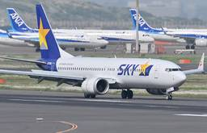
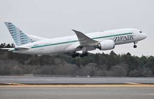
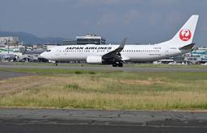
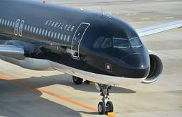

Aviation Wire
https://www.aviationwire.jp
航空経済紙「Aviation Wire」は、航空機やエアライン、空港、官公庁に関する情報や各種統計などをお届けして参ります。
フィード

“空のノーベル賞”トロフィー、羽田空港で再公開 11/30から
Aviation Wire
羽田空港のターミナルを運営する日本空港ビルデング（9706）は、“空のノーベル賞”とも呼ばれる航空賞「ハーモン・トロフィー（Harmon Trophy）」を11月30日から第1ターミナルで展示する。1955年に開館した […]
5時間前

ニュージーランド航空、成田－クライストチャーチ11年ぶり再開 往復とも直行便
Aviation Wire
ニュージーランド航空（ANZ/NZ）は11月27日、クライストチャーチ－成田線を約11年ぶりに再開した。2027年5月8日まで、週3往復の季節便として運航する。前回は成田発クライストチャーチ行きの片道のみ直行便で、今回 […]
1日前

スカイマーク、ANA系5社と手荷物連帯運送 JAL・FDAも継続
Aviation Wire
スカイマーク（SKY/BC、9204）は11月27日、全日本空輸（ANA/NH）など国内航空5社と、乗り継ぎ時に預け入れ手荷物を最終目的地まで運ぶ「手荷物連帯運送」を12月1日から始めると発表した。スカイマークによると […]
1日前
FDA、コシノジュンコ氏デザイン「BLACK RED」27年3月日本到着の17号機 2
2
Aviation Wire
フジドリームエアラインズ（FDA/JH）は11月27日、2027年に導入予定のエンブラエル175型機（E175）の17号機（予定登録記号JA17FJ）について、機体カラーとデザインを決定したと発表した。黒と赤を組み合わ […]
1日前

ZIPAIR、ヒューストン週4往復 バンクーバーは週5往復＝27年夏ダイヤ
Aviation Wire
ZIPAIR（ジップエア、TZP/ZG）は11月26日、成田－ヒューストン線とバンクーバー線の2027年夏ダイヤ（27年3月28日から10月30日）の航空券販売を開始した。ヒューストン線は週4往復、バンクーバー線は週5 […]
1日前

ノースアトランティック航空、資金難で全便運航停止 破産申請の可能性も
Aviation Wire
ノルウェーのノースアトランティック航空（NBT/N0）は現地時間11月26日、同日の全便の運航を停止したと発表した。資金調達策の見通しが明らかになるまでの措置で、緊急に短期資金を確保できなければ、取締役会は破産申請する […]
1日前
成田空港、純利益206億円 4期連続の中間最終黒字＝26年4-9月期
Aviation Wire
成田空港を運営する成田国際空港会社（NAA）が11月26日に発表した2026年4-9月期（27年3月期中間）連結決算は、純利益が30.8％増の206億円と増益で、中間期として4期連続の最終黒字となった。 売上高（営業 […]
1日前

JAL、宮崎着陸やり直し時に地表接近 スポイラー自動格納されず、国交省が重大インシデント認定
Aviation Wire
宮崎空港で11月14日午前9時59分ごろ、日本航空（JAL/JL、9201）の羽田発宮崎行きJL687便（ボーイング737-800型機、登録記号JA322J）が着陸をやり直す「ゴーアラウンド（着陸復行）」を実施した際、 […]
2日前

スターフライヤー、台北－北九州増便 27年4月から昼便追加、週12往復に
Aviation Wire
スターフライヤー（SFJ/7G、9206）は11月26日、北九州－台北（桃園）線の2027年夏ダイヤ（27年3月28日から10月30日）の運航スケジュールを決定したと発表した。3月28日から7月31日までが対象で、現在 […]
2日前

スターフライヤー、高雄へ27年夏定期チャーター 北九州から3カ月間
Aviation Wire
スターフライヤー（SFJ/7G、9206）は11月26日、北九州－高雄間の定期チャーター便を開設すると発表した。2027年夏ダイヤ（27年3月28日から10月30日）期間中に約3カ月間、昼間帯に1日1往復を運航する計画 […]
2日前